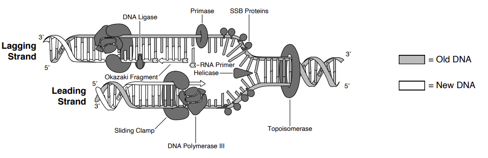
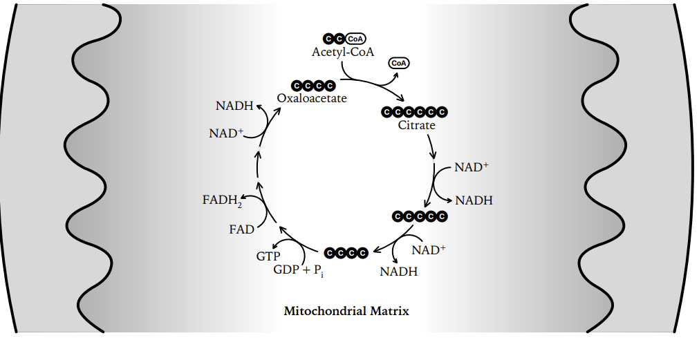
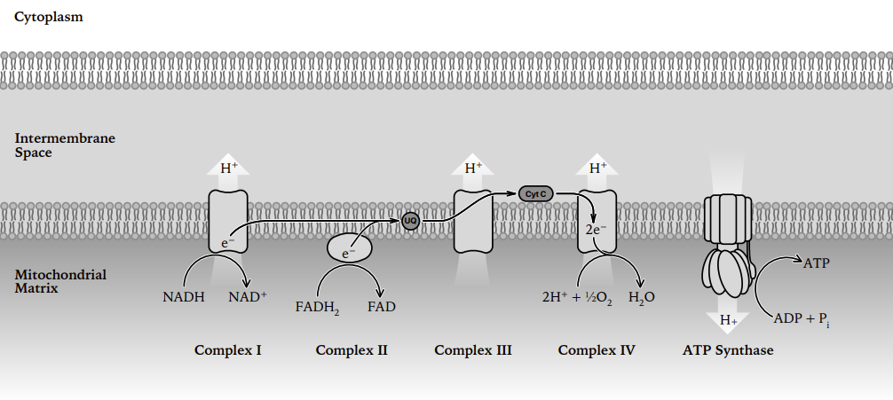
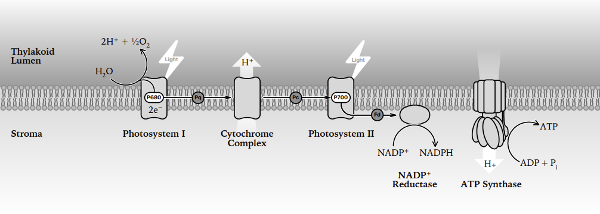
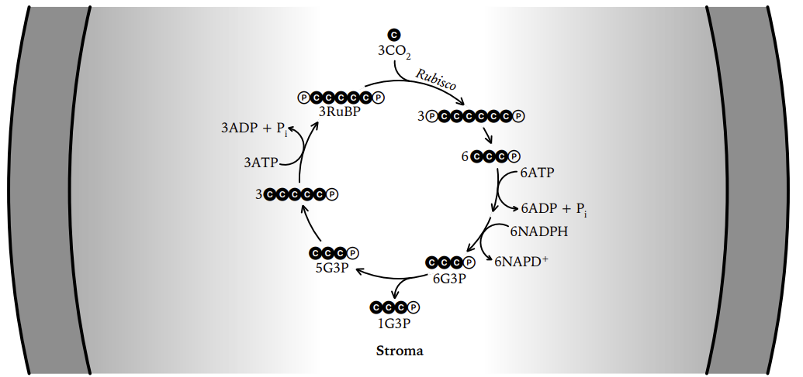
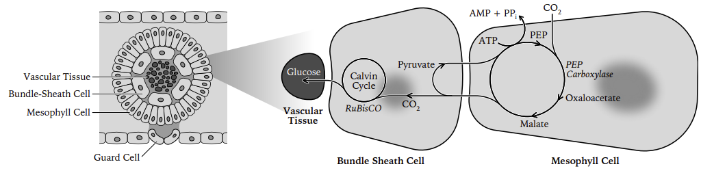

Amino acids
Every amino acid = central α-carbon + amino group (–NH2) + carboxyl group (–COOH) + hydrogen + R group (side chain). Only the R group differs.
The 20 standard amino acids
| Name | 3-letter | 1-letter | Class | Charge (pH 7) | Key characteristics |
|---|---|---|---|---|---|
| Glycine | Gly | G | Nonpolar | Neutral | R = H. Smallest, achiral, very flexible; fits tight turns. |
| Alanine | Ala | A | Nonpolar | Neutral | R = CH₃. Small, hydrophobic, helix-friendly. |
| Valine * | Val | V | Nonpolar, branched | Neutral | Hydrophobic core. Glu→Val swap causes sickle-cell. |
| Leucine * | Leu | L | Nonpolar, branched | Neutral | Very common; buried in hydrophobic core; leucine zippers. |
| Isoleucine * | Ile | I | Nonpolar, branched | Neutral | Hydrophobic, two chiral centers. |
| Methionine * | Met | M | Nonpolar, sulfur | Neutral | Contains S (thioether). Start codon AUG; first residue of every protein. |
| Proline | Pro | P | Nonpolar, cyclic | Neutral | Side chain bonds back to N (imino acid). Rigid, so it acts as a helix breaker, found in turns. |
| Phenylalanine * | Phe | F | Nonpolar, aromatic | Neutral | Big hydrophobic benzene ring; stacking interactions. |
| Tryptophan * | Trp | W | Nonpolar, aromatic | Neutral | Largest residue, indole ring; absorbs at 280 nm (protein quantitation). |
| Serine | Ser | S | Polar uncharged | Neutral | –OH. Phosphorylation site; serine-protease active sites. |
| Threonine * | Thr | T | Polar uncharged | Neutral | –OH + methyl. Phosphorylation site; O-glycosylation. |
| Cysteine | Cys | C | Polar, sulfur | Neutral (pKa 8.3) | –SH thiol. Two Cys form a disulfide bond, the only covalent bond in tertiary structure. |
| Tyrosine | Tyr | Y | Polar, aromatic | Neutral (pKa 10.1) | Aromatic + –OH; phosphorylation target; absorbs at 280 nm. |
| Asparagine | Asn | N | Polar uncharged | Neutral | Amide of Asp; N-linked glycosylation site. |
| Glutamine | Gln | Q | Polar uncharged | Neutral | Amide of Glu; nitrogen transport. |
| Aspartate | Asp | D | Acidic | Negative (pKa 3.9) | Carboxylate side chain; salt bridges, metal binding, catalysis. |
| Glutamate | Glu | E | Acidic | Negative (pKa 4.3) | One CH₂ longer than Asp; neurotransmitter. |
| Lysine * | Lys | K | Basic | Positive (pKa 10.5) | Long –NH₃⁺ chain; binds DNA backbone; acetylation site on histones. |
| Arginine | Arg | R | Basic | Positive (pKa 12.5) | Guanidinium group; the most basic side chain, positive at nearly any pH; DNA binding. |
| Histidine * | His | H | Basic, aromatic | Partly + (pKa 6.0) | Only side chain that ionizes near physiological pH, so it handles buffering and acid/base catalysis; metal coordination. |
* = essential in humans (9 total: His, Ile, Leu, Lys, Met, Phe, Thr, Trp, Val; mnemonic "PVT TIM HaLL").
Peptide bond
The genetic code
- Triplet: 3 mRNA bases = 1 codon = 1 amino acid. 4³ = 64 codons.
- Degenerate/redundant: 61 sense codons for 20 amino acids; most redundancy at the 3rd base (wobble).
- Unambiguous: one codon never codes for two amino acids.
- Nearly universal across all organisms (mitochondria are the exception).
- Non-overlapping, read continuously from a fixed start, so insertions or deletions cause frameshifts.
- AUG = start (Met; fMet in bacteria). UAA, UAG, UGA = stop (no tRNA; release factors bind).
Codon table (mRNA 5'→3')
| 1st ↓ / 2nd → | U | C | A | G | 3rd |
|---|---|---|---|---|---|
| U | Phe (F) | Ser (S) | Tyr (Y) | Cys (C) | U |
| Phe (F) | Ser (S) | Tyr (Y) | Cys (C) | C | |
| Leu (L) | Ser (S) | STOP | STOP | A | |
| Leu (L) | Ser (S) | STOP | Trp (W) | G | |
| C | Leu (L) | Pro (P) | His (H) | Arg (R) | U |
| Leu (L) | Pro (P) | His (H) | Arg (R) | C | |
| Leu (L) | Pro (P) | Gln (Q) | Arg (R) | A | |
| Leu (L) | Pro (P) | Gln (Q) | Arg (R) | G | |
| A | Ile (I) | Thr (T) | Asn (N) | Ser (S) | U |
| Ile (I) | Thr (T) | Asn (N) | Ser (S) | C | |
| Ile (I) | Thr (T) | Lys (K) | Arg (R) | A | |
| Met (M) START | Thr (T) | Lys (K) | Arg (R) | G | |
| G | Val (V) | Ala (A) | Asp (D) | Gly (G) | U |
| Val (V) | Ala (A) | Asp (D) | Gly (G) | C | |
| Val (V) | Ala (A) | Glu (E) | Gly (G) | A | |
| Val (V) | Ala (A) | Glu (E) | Gly (G) | G |
Mutation types
| Type | What changes | Effect on protein |
|---|---|---|
| Silent | Base change, same amino acid (usually 3rd position) | None |
| Missense, conservative | New amino acid with similar chemistry (e.g. Leu→Ile) | Often tolerated |
| Missense, non-conservative | New amino acid, different chemistry (e.g. Glu→Val) | Can destroy function (sickle-cell) |
| Nonsense | Codon → STOP | Truncated, usually non-functional |
| Frameshift | Insertion/deletion not a multiple of 3 | Everything downstream garbled; usually the most severe |
Central dogma
Macromolecules
| Class | Monomer | Bond | Elements | Function / notes |
|---|---|---|---|---|
| Carbohydrates | Monosaccharide (glucose) | Glycosidic | C H O (1:2:1) | Energy + structure. Starch/glycogen = storage; cellulose/chitin/peptidoglycan = structure. |
| Lipids | Not true polymers: glycerol + fatty acids | Ester | C H O (little O) | Hydrophobic. Saturated = no C=C, solid; unsaturated = C=C kinks, liquid. Phospholipids are amphipathic → bilayer. Steroids = 4 fused rings. |
| Proteins | Amino acid | Peptide (amide) | C H O N (S) | Enzymes, structure, transport, signaling, defense. Most functionally diverse. |
| Nucleic acids | Nucleotide | Phosphodiester | C H O N P | Information storage/transfer. Nucleotide = phosphate + 5-carbon sugar + nitrogenous base. |
DNA vs RNA
| DNA | RNA | |
|---|---|---|
| Sugar | Deoxyribose (no 2'-OH) | Ribose (2'-OH → less stable) |
| Bases | A T G C | A U G C |
| Strands | Double helix, antiparallel | Usually single, folds on itself |
| Role | Long-term storage | mRNA message, tRNA adaptor, rRNA catalytic core |
Bonds and non-covalent forces
| Interaction | Relative strength | What it is | Where it matters |
|---|---|---|---|
| Covalent (nonpolar) | Strongest (~80-100 kcal/mol) | Equal electron sharing (C–C, C–H) | Backbones of all macromolecules |
| Covalent (polar) | Strongest | Unequal sharing → partial charges (O–H, N–H) | Source of water's polarity |
| Disulfide bond | Strong covalent | Cys–S–S–Cys | Locks tertiary structure of secreted proteins |
| Ionic / salt bridge | Moderate (weak in water) | Full + attracts full – | Asp/Glu with Lys/Arg; strong when buried, shielded in water |
| Hydrogen bond | Weak (~1-5 kcal/mol), strong in bulk | H on N/O/F attracted to another N/O | DNA base pairing, α-helix, β-sheet, water properties |
| Van der Waals | Weakest | Transient dipoles, requires close contact | Tight-packed protein interiors, shape complementarity |
| Hydrophobic effect | Major driving force | Nonpolar groups cluster to free ordered water (entropy) | Protein folding, membrane bilayers |
Base pairing
Levels of protein structure
| Level | What it is | Held together by | Examples |
|---|---|---|---|
| Primary | Linear amino acid sequence, N→C | Peptide bonds (covalent) | Encoded directly by the gene; determines all higher levels (Anfinsen) |
| Secondary | α-helix and β-pleated sheet (parallel/antiparallel), turns | H-bonds between backbone C=O and N–H | Keratin (α), silk fibroin (β). Pro breaks helices; Gly adds flexibility |
| Tertiary | Full 3-D fold of one polypeptide | R-group interactions: hydrophobic clustering, H-bonds, ionic/salt bridges, van der Waals, disulfides | Myoglobin; enzyme active site is formed here |
| Quaternary | Two or more folded subunits assembled | Same non-covalent forces, between chains | Hemoglobin (α₂β₂), collagen triple helix, DNA polymerase holoenzyme |
Enzymes, reactions and ATP
Enzyme basics
- Biological catalyst that lowers activation energy (Ea), speeds the reaction, is not consumed and does not change ΔG or equilibrium.
- Active site binds substrate; induced fit means the site reshapes around the substrate.
- Specific for substrate and reaction. Named for what they act on: -ase.
- Sensitive to temperature and pH; beyond the optimum, denaturation kills activity.
- Cofactors = inorganic (Mg²⁺, Zn²⁺); coenzymes = organic (NAD⁺, FAD, coenzyme A, often from vitamins).
| Regulation | Binds where | Effect | Overcome by more substrate? |
|---|---|---|---|
| Competitive inhibitor | Active site | Blocks substrate binding | Yes |
| Noncompetitive / allosteric inhibitor | Allosteric site | Changes active-site shape | No |
| Allosteric activator | Allosteric site | Stabilizes the active form | none |
| Feedback inhibition | Allosteric site of the first enzyme | End product shuts down its own pathway | No |
Energy and ATP
| Term | Meaning |
|---|---|
| Exergonic (ΔG < 0) | Releases energy, spontaneous; catabolism (breakdown) |
| Endergonic (ΔG > 0) | Requires energy input; anabolism (building) |
| Coupled reaction | ATP hydrolysis drives an endergonic reaction |
| ATP structure | Adenine + ribose + 3 phosphates; energy sits in the repulsion of the negative phosphates |
| ATP → ADP + Pi | Exergonic, ≈ –7.3 kcal/mol; the molecule cells spend to pay for work, and it is recycled constantly |
| Redox | OIL RIG: Oxidation Is Loss of electrons, Reduction Is Gain. NAD⁺/FAD are electron carriers (reduced to NADH/FADH₂). |
Types of organisms and cell composition
| Feature | Prokaryote (Bacteria, Archaea) | Eukaryote |
|---|---|---|
| Nucleus | None; a nucleoid region instead | True membrane-bound nucleus |
| DNA | Single circular chromosome + plasmids | Multiple linear chromosomes with histones |
| Organelles | No membrane-bound organelles | Mitochondria, ER, Golgi, lysosomes, (chloroplasts) |
| Ribosomes | 70S (30S + 50S) | 80S (40S + 60S); 70S inside mitochondria |
| Cell wall | Peptidoglycan (bacteria) | Cellulose (plants), chitin (fungi), none in animals |
| Size | ~1-10 µm | ~10-100 µm |
| Transcription/translation | Coupled, in the same compartment, with no introns | Separated by the nuclear envelope; mRNA processed first |
| Division | Binary fission | Mitosis / meiosis |
Organelles: structure and function
| Organelle | Function |
|---|---|
| Nucleus | Stores DNA; site of replication and transcription; bounded by a double envelope with pores |
| Nucleolus | Makes rRNA and assembles ribosomal subunits |
| Ribosome | Protein synthesis (translation); free in cytosol or bound to rough ER |
| Rough ER | Ribosome-studded; synthesizes and folds proteins for secretion or membranes |
| Smooth ER | Lipid and steroid synthesis, detoxification, Ca²⁺ storage |
| Golgi apparatus | Modifies, sorts, tags and ships proteins for delivery |
| Lysosome | Digestive enzymes (acidic interior); breaks down waste and worn organelles |
| Peroxisome | Breaks down fatty acids and detoxifies H₂O₂ using catalase |
| Mitochondrion | ATP production: Krebs in the matrix, ETC on the cristae; own circular DNA + 70S ribosomes |
| Chloroplast | Photosynthesis: light reactions in thylakoids, Calvin cycle in stroma; own DNA |
| Vacuole | Storage, waste, turgor pressure (large central vacuole in plants) |
| Plasma membrane | Selectively permeable phospholipid bilayer; transport and signaling (fluid mosaic model) |
| Cell wall | Rigid support: cellulose (plants), chitin (fungi), peptidoglycan (bacteria) |
| Cytoskeleton | Microfilaments (actin), intermediate filaments, microtubules; shape, transport and division |
| Centrosome / centrioles | Organizes microtubules and the mitotic spindle (animals) |
| Cilia & flagella | Movement; 9+2 microtubule arrangement |
Endosymbiotic theory: mitochondria and chloroplasts were once free-living bacteria. They kept double membranes, circular DNA and 70S ribosomes, and they still divide by binary fission.
DNA structure and replication
- Double helix, antiparallel strands, sugar-phosphate backbone outside, bases inside.
- Backbone joined by phosphodiester bonds (5' phosphate to 3' OH); negatively charged → runs to the + electrode in a gel.
- Replication is semiconservative: each daughter duplex = 1 old + 1 new strand.
- DNA polymerase can only add to a free 3'-OH → synthesis is strictly 5'→3' and a primer is mandatory.

| Enzyme / protein | Job |
|---|---|
| Helicase | Unwinds the double helix at the origin, breaking H-bonds |
| Single-strand binding protein | Keeps separated strands from re-annealing |
| Topoisomerase / gyrase | Relieves supercoiling ahead of the fork |
| Primase | Lays down a short RNA primer to give pol a 3'-OH |
| DNA polymerase III | Main elongation enzyme, 5'→3'; proofreads with 3'→5' exonuclease |
| DNA polymerase I | Removes RNA primers, fills the gaps with DNA |
| DNA ligase | Seals nicks between Okazaki fragments (phosphodiester bond) |
| Telomerase | Extends chromosome ends in eukaryotes (end-replication problem) |
Transcription and translation
Transcription
| Stage | What happens |
|---|---|
| Initiation | RNA polymerase binds the promoter. Bacteria: sigma factor recognizes –10 (TATAAT, Pribnow) and –35 boxes. Eukaryotes: transcription factors + TATA box recruit RNA pol II. |
| Elongation | Reads template (antisense) strand 3'→5', builds RNA 5'→3'. No primer needed. The coding/sense strand matches the mRNA (with U for T). |
| Termination | Bacteria: rho-dependent or hairpin (rho-independent). Eukaryotes: poly-A signal, then cleavage. |
| Processing (eukaryotes only) | 5' methyl-guanosine cap, 3' poly-A tail, splicing of introns by the spliceosome (snRNPs) leaving exons. Alternative splicing → multiple proteins from one gene. |
Eukaryotic polymerases: pol I → rRNA, pol II → mRNA, pol III → tRNA + 5S rRNA. Bacteria use a single RNA polymerase.
Translation
| Component | Role |
|---|---|
| mRNA | Carries codons; read 5'→3' |
| tRNA | Adaptor: anticodon pairs with the codon (antiparallel), carries the amino acid at its 3' CCA end |
| Aminoacyl-tRNA synthetase | Charges each tRNA with its correct amino acid. There is one synthetase per amino acid, and it does the actual reading of the code |
| Ribosome | rRNA + protein. A site accepts incoming charged tRNA, P site holds the growing chain, E site exits the empty tRNA |
| Peptidyl transferase | rRNA ribozyme activity in the large subunit; forms the peptide bond |
| Release factor | Recognizes a stop codon, hydrolyzes the chain off the tRNA |
Gene regulation and the lac operon
| Lactose | Glucose | Repressor | cAMP–CAP | Transcription |
|---|---|---|---|---|
| Absent | Present | Bound to operator | Low cAMP, no CAP | Off |
| Absent | Absent | Bound to operator | High cAMP, CAP bound | Off (repressor wins) |
| Present | Present | Released (allolactose) | Low cAMP, no CAP | Low / leaky |
| Present | Absent | Released | High cAMP, CAP bound | Maximum |
Cellular respiration and fermentation
| Stage | Location | Input | Output per glucose |
|---|---|---|---|
| Glycolysis | Cytosol (all cells, no O₂ needed) | Glucose (6C), 2 ATP invested | 2 pyruvate (3C), net 2 ATP (substrate-level), 2 NADH |
| Pyruvate oxidation | Mitochondrial matrix | 2 pyruvate | 2 acetyl-CoA, 2 NADH, 2 CO₂ |
| Krebs / citric acid cycle | Mitochondrial matrix | 2 acetyl-CoA | 6 NADH, 2 FADH₂, 2 ATP (GTP), 4 CO₂ |
| Electron transport + chemiosmosis | Inner mitochondrial membrane (plasma membrane in prokaryotes) | NADH, FADH₂, O₂ (final electron acceptor) | ~26-28 ATP, H₂O |
Glycolysis step by step
Cytosol · no oxygen required · universal to nearly all life · 10 enzyme steps, split into an investment phase (spend 2 ATP) and a payoff phase (make 4 ATP).
| # | Reaction | Enzyme | Energy change |
|---|---|---|---|
| ENERGY INVESTMENT PHASE (per glucose) | |||
| 1 | Glucose → glucose-6-phosphate | Hexokinase (glucokinase in liver) | –1 ATP; phosphate traps glucose inside the cell |
| 2 | G6P → fructose-6-phosphate | Phosphoglucose isomerase | none |
| 3 | F6P → fructose-1,6-bisphosphate | Phosphofructokinase-1 (PFK-1) | –1 ATP; rate-limiting / committed step. Inhibited by ATP & citrate, activated by AMP & F-2,6-BP |
| 4 | F-1,6-BP → DHAP + G3P (two 3C sugars) | Aldolase | none |
| 5 | DHAP ⇌ G3P | Triose phosphate isomerase | Now 2 × G3P, so everything below happens twice |
| ENERGY PAYOFF PHASE (×2) | |||
| 6 | G3P → 1,3-bisphosphoglycerate | G3P dehydrogenase (GAPDH) | +1 NADH each (2 total) |
| 7 | 1,3-BPG → 3-phosphoglycerate | Phosphoglycerate kinase | +1 ATP each, by substrate-level phosphorylation |
| 8 | 3-PG → 2-phosphoglycerate | Phosphoglycerate mutase | none |
| 9 | 2-PG → phosphoenolpyruvate (PEP) | Enolase | Releases H₂O, creates a high-energy bond |
| 10 | PEP → pyruvate | Pyruvate kinase | +1 ATP each, substrate-level |
Pyruvate oxidation and the Krebs (citric acid / TCA) cycle
Link reaction: pyruvate enters the matrix, and pyruvate dehydrogenase complex strips a CO₂ and attaches coenzyme A → acetyl-CoA (2C) + NADH + CO₂. Happens twice per glucose. Irreversible, so fat cannot be turned back into glucose from here.

| Step | Enzyme | Yield |
|---|---|---|
| Acetyl-CoA (2C) + oxaloacetate (4C) → citrate (6C) | Citrate synthase | none |
| Citrate → isocitrate | Aconitase | none |
| Isocitrate → α-ketoglutarate (5C) | Isocitrate dehydrogenase (rate-limiting) | NADH + CO₂ |
| α-ketoglutarate → succinyl-CoA (4C) | α-ketoglutarate dehydrogenase | NADH + CO₂ |
| Succinyl-CoA → succinate | Succinyl-CoA synthetase | GTP/ATP (substrate-level) |
| Succinate → fumarate | Succinate dehydrogenase (= Complex II, sits in the inner membrane) | FADH₂ |
| Fumarate → malate | Fumarase (+H₂O) | none |
| Malate → oxaloacetate | Malate dehydrogenase | NADH |
Electron transport chain and chemiosmosis
| Complex | Name | Electron flow | H⁺ pumped |
|---|---|---|---|
| I | NADH dehydrogenase | NADH → coenzyme Q | 4 |
| II | Succinate dehydrogenase | FADH₂ → coenzyme Q (enters after complex I) | 0, which is why FADH₂ yields less ATP |
| III | Cytochrome bc₁ | Q → cytochrome c | 4 |
| IV | Cytochrome c oxidase | cyt c → O₂ + 4H⁺ → 2 H₂O | 2 |
| V | ATP synthase | Not a carrier; H⁺ flows back through it and it phosphorylates ADP (~4 H⁺ per ATP) | none |
Carriers are arranged in order of increasing electronegativity; oxygen is the final electron acceptor. Block O₂ and the entire chain backs up: NAD⁺ is never regenerated, Krebs stops, and only glycolysis/fermentation continues.
| Poison / uncoupler | Target | Result |
|---|---|---|
| Rotenone | Complex I | Electron flow stops → no gradient → no ATP |
| Antimycin A | Complex III | |
| Cyanide, carbon monoxide, azide | Complex IV | |
| Oligomycin | ATP synthase | Gradient builds but cannot be spent |
| DNP, thermogenin (brown fat) | Membrane (uncoupler) | H⁺ leaks back; transport runs hot, ATP is not made, and energy is released as heat |

ATP tally per glucose
| Stage | ATP (direct) | NADH | FADH₂ | ATP from carriers |
|---|---|---|---|---|
| Glycolysis | 2 (net, substrate-level) | 2 (cytosolic) | none | 3-5 (depends on shuttle) |
| Pyruvate oxidation (×2) | 0 | 2 | none | 5 |
| Krebs (×2 turns) | 2 (GTP, substrate-level) | 6 | 2 | 15 + 3 |
| Total | 4 substrate-level | 10 | 2 | ~26-28 oxidative |
Fermentation
Fermentation makes no ATP of its own. Its only job is to oxidize NADH back to NAD⁺ so glycolysis can keep turning. Otherwise the cell runs out of NAD⁺ within seconds and even the 2 ATP stop.
| Type | Organism | Pathway | Products per glucose | Net ATP |
|---|---|---|---|---|
| Alcoholic | Yeast (Saccharomyces cerevisiae), Zymomonas | Pyruvate → acetaldehyde + CO₂ (pyruvate decarboxylase) → ethanol (alcohol dehydrogenase, oxidizes NADH) | 2 ethanol + 2 CO₂ | 2 |
| Lactic acid | Muscle cells, Lactobacillus | Pyruvate + NADH → lactate (lactate dehydrogenase) in one step, with no CO₂ | 2 lactate | 2 |
Yeast: aerobic vs anaerobic side by side
| Aerobic (respiration, O₂ present) | Anaerobic (alcoholic fermentation, no O₂) | |
|---|---|---|
| Overall equation | C₆H₁₂O₆ + 6 O₂ → 6 CO₂ + 6 H₂O | C₆H₁₂O₆ → 2 C₂H₅OH + 2 CO₂ |
| Pathways used | Glycolysis + pyruvate oxidation + Krebs + ETC | Glycolysis only, then the 2-step ethanol branch |
| ATP per glucose | ~30-32 (yeast ≈ 30, glycerol-phosphate shuttle) | 2 |
| ATP source | Mostly oxidative phosphorylation (chemiosmosis) | Substrate-level only |
| Final electron acceptor | O₂ → water | Acetaldehyde (an organic molecule) → ethanol |
| Carbon products | CO₂ + H₂O, glucose fully oxidized | Ethanol + CO₂; ethanol still holds most of the energy, which is why it burns |
| Efficiency | ~15-16× more ATP; ~34% of glucose energy captured | ~2% captured; yeast must burn glucose fast to compensate |
| Where CO₂ comes from | Pyruvate oxidation + Krebs | Pyruvate decarboxylase step only |
Anaerobic respiration ≠ fermentation
| Aerobic respiration | Anaerobic respiration | Fermentation | |
|---|---|---|---|
| Final electron acceptor | O₂ | Inorganic, not O₂ (NO₃⁻, SO₄²⁻, Fe³⁺) | Organic (pyruvate, acetaldehyde) |
| Uses an ETC? | Yes | Yes | No |
| ATP yield | ~30-32 | Intermediate (fewer than aerobic) | 2 |
| Examples | Most eukaryotes | Denitrifying and sulfate-reducing bacteria | Yeast, muscle, Lactobacillus |
Other fuels entering the pathway
| Fuel | Broken into | Entry point |
|---|---|---|
| Fats (triglycerides) | Glycerol; fatty acids via β-oxidation | Glycerol → G3P (glycolysis); fatty acids → acetyl-CoA (Krebs). Most ATP per gram, about 9 kcal/g against 4 for carbs |
| Proteins | Amino acids, deaminated (amino group → urea) | Pyruvate, acetyl-CoA, or Krebs intermediates depending on the residue |
| Other sugars | Fructose, galactose, glycogen | Converted into glycolysis intermediates |
Photosynthesis
6 CO₂ + 6 H₂O + light → C₆H₁₂O₆ + 6 O₂. The process is endergonic, anabolic and redox: CO₂ is reduced, water is oxidized. Respiration's balance sheet run backwards.
Chloroplast structure and pigments
| Part | What happens there |
|---|---|
| Thylakoid membrane (stacked into grana) | Light-dependent reactions: photosystems, ETC, ATP synthase all embedded here |
| Thylakoid lumen (inside the disc) | Where H⁺ accumulates; water is split facing this space |
| Stroma (fluid around the thylakoids) | Calvin cycle; also holds chloroplast DNA and 70S ribosomes |
| Double outer membrane | Envelope; evidence for endosymbiotic origin |
- Chlorophyll a, the only pigment in the reaction center; absorbs blue-violet (~430 nm) and red (~662 nm), reflects green.
- Chlorophyll b + carotenoids (carotenes, xanthophylls) = accessory pigments; widen the range absorbed and dissipate excess energy (photoprotection). Visible in fall once chlorophyll degrades.
- Absorption spectrum = light a pigment takes in. Action spectrum = light that actually drives photosynthesis. They match closely. Engelmann's bacteria clustered in red and blue light, proving chlorophyll drives the process.
- Antenna complex harvests photons and funnels the energy to the reaction-center chlorophyll, which passes an excited electron to the primary electron acceptor.
Light-dependent reactions (thylakoid membrane)

- PSII (P680) absorbs a photon; an excited electron leaves for the primary acceptor. P680⁺ is the strongest biological oxidizer known.
- Photolysis: the oxygen-evolving complex splits water to replace that electron → releases O₂ and dumps H⁺ into the lumen.
- Electron travels down the chain (PQ → cytochrome b₆f → PC); the b₆f complex pumps H⁺ into the lumen.
- PSI (P700) re-energizes the electron with a second photon → ferredoxin → NADP⁺ reductase makes NADPH in the stroma.
- Chemiosmosis: H⁺ flows from lumen back to stroma through ATP synthase = photophosphorylation → ATP.
| Noncyclic (linear) | Cyclic | |
|---|---|---|
| Photosystems used | PSII → PSI | PSI only (electron loops back to b₆f) |
| Products | ATP + NADPH + O₂ | ATP only, with no NADPH and no O₂ |
| Why | Standard route | Tops up ATP when the Calvin cycle needs more ATP than NADPH (it needs 3:2) |
Light-independent reactions: the Calvin cycle (stroma)
Called "dark reactions" but they run in daylight. They just do not use photons directly, they spend the ATP and NADPH the light reactions made.
| Phase | What happens | Cost per 3 CO₂ |
|---|---|---|
| 1. Carbon fixation | Rubisco attaches CO₂ to RuBP (5C); the 6C product immediately splits into two 3-phosphoglycerate (3-PGA, 3C) | none |
| 2. Reduction | 3-PGA → 1,3-BPG (uses ATP) → G3P (uses NADPH) | 6 ATP + 6 NADPH |
| 3. Regeneration of RuBP | 5 of the 6 G3P are rearranged back into 3 RuBP; 1 G3P exits | 3 ATP |

Photorespiration and the C3 / C4 / CAM strategies
The problem: rubisco also accepts O₂ instead of CO₂. On hot, dry days stomata close to save water, so CO₂ inside the leaf falls, O₂ builds up, and rubisco starts fixing O₂. That is photorespiration: it consumes ATP, releases CO₂ and makes no sugar, wasting up to ~25% of the plant's fixed carbon.
| C3 | C4 | CAM | |
|---|---|---|---|
| First stable product | 3-PGA (3C) | Oxaloacetate → malate (4C) | Oxaloacetate → malate (4C) |
| Initial fixing enzyme | Rubisco | PEP carboxylase, high affinity for CO₂, ignores O₂ | PEP carboxylase |
| Separation strategy | None; everything happens in mesophyll cells | Spatial: CO₂ fixed in mesophyll, pumped to bundle-sheath cells where rubisco works (Kranz anatomy) | Temporal: stomata open at night to fix CO₂ into malate (stored in vacuole); Calvin cycle runs by day with stomata shut |
| Photorespiration | High in heat/drought | Very low | Very low |
| Water efficiency | Lowest | Better | Best |
| Energy cost | Cheapest per CO₂ | Extra ATP to regenerate PEP | Extra ATP; slowest growth |
| Best conditions | Cool, moist, moderate light | Hot, sunny, moderately dry | Arid deserts |
| Examples | Wheat, rice, soybean, most trees (~85% of species) | Corn, sugarcane, sorghum, crabgrass | Cacti, succulents, pineapple, agave, jade plant |

Photosynthesis vs respiration
| Photosynthesis | Cellular respiration | |
|---|---|---|
| Equation | 6 CO₂ + 6 H₂O → C₆H₁₂O₆ + 6 O₂ | C₆H₁₂O₆ + 6 O₂ → 6 CO₂ + 6 H₂O |
| Energy | Endergonic; stores light energy in bonds | Exergonic; releases it as ATP |
| Organelle | Chloroplast | Mitochondrion |
| Electron carrier | NADP⁺ / NADPH | NAD⁺ / NADH, FAD / FADH₂ |
| Carbon | CO₂ reduced to sugar | Sugar oxidized to CO₂ |
| Who does it | Plants, algae, cyanobacteria | Essentially all organisms, including plants, day and night |
Mendel's laws and pedigrees
- Law of segregation: the two alleles of a gene separate during meiosis; each gamete gets one.
- Law of independent assortment: genes on different chromosomes assort independently.
- Dominance: the dominant allele masks the recessive in a heterozygote.
- Genotype = alleles carried; phenotype = trait shown. Homozygous (AA/aa) vs heterozygous (Aa).
| Cross | Genotypic ratio | Phenotypic ratio |
|---|---|---|
| Monohybrid Aa × Aa | 1 AA : 2 Aa : 1 aa | 3 : 1 |
| Dihybrid AaBb × AaBb | none | 9 : 3 : 3 : 1 |
| Testcross Aa × aa | 1 Aa : 1 aa | 1 : 1 (reveals unknown genotype) |
| Incomplete dominance Aa | 1 : 2 : 1 | 1 : 2 : 1 (blended, e.g. pink snapdragons) |
| Codominance | 1 : 2 : 1 | Both alleles fully expressed (AB blood type) |
Punnett square: Aa × Aa
Inheritance patterns in pedigrees
| Pattern | Tell-tale signs |
|---|---|
| Autosomal recessive | Skips generations; affected child from two unaffected carriers; sexes equally affected; consanguinity raises risk |
| Autosomal dominant | Appears every generation; affected child always has an affected parent; sexes equally affected |
| X-linked recessive | Mostly males; passed from carrier mother to son; affected father → all daughters are carriers, no son affected |
| X-linked dominant | Affected father → all daughters affected, no sons; more females affected overall |
| Y-linked | Father → all sons only |
| Mitochondrial | Affected mother → all children; fathers never transmit |
Pedigree symbols: square = male, circle = female, filled = affected, half-filled/dot = carrier, horizontal line = mating, double line = consanguineous.
Linkage, recombination and maps
- Genes on the same chromosome are linked and violate independent assortment, so parental combinations outnumber recombinants.
- Crossing over in prophase I of meiosis breaks linkage; the closer two genes are, the less often it happens.
| Concept | Meaning |
|---|---|
| Testcross | Heterozygote × homozygous recessive; offspring phenotypes read out gamete frequencies directly |
| Parental classes | The two most numerous phenotypes; match the original chromosome arrangement |
| Double crossover class | The two rarest classes; compare them to the parentals, and the gene that flipped is the middle gene |
| Three-point cross | Maps order and distance for three genes in one experiment |
| Interference | One crossover suppresses another nearby. Coefficient of coincidence = observed / expected doubles; interference = 1 – c.o.c. |
Recombinant DNA and cloning
| Tool | What it does |
|---|---|
| Restriction endonuclease | Cuts DNA at a specific palindromic site. EcoRI = G↓AATTC → sticky ends; SmaI → blunt ends. Bacterial defense against phage; host DNA protected by methylation. |
| DNA ligase | Seals the insert into the vector (phosphodiester bonds) |
| Plasmid vector | Needs an origin of replication, a selectable marker (antibiotic resistance), and a multiple cloning site |
| Other vectors | Phage λ (bigger inserts), cosmid, BAC, YAC, with capacity rising in that order |
| Transformation | Getting the plasmid into competent bacteria (heat shock, electroporation) |
| Blue/white screening | Insert disrupts lacZ → white colonies carry the insert; blue colonies (X-gal + IPTG) are empty vector |
| Reverse transcriptase | Makes DNA from an RNA template; the enzyme behind cDNA (from retroviruses) |
Cloning workflow
- Cut insert DNA and vector with the same restriction enzyme → compatible ends.
- Ligate insert into vector = recombinant plasmid.
- Transform into bacteria.
- Select on antibiotic plates (only transformed cells grow).
- Screen for the right clone using colony hybridization with a labeled probe, or antibody for an expression library.
- Grow up and purify the amplified DNA or expressed protein.
Genomic vs cDNA library
| Genomic library | cDNA library | |
|---|---|---|
| Starting material | Total chromosomal DNA, restriction-digested | mRNA + reverse transcriptase |
| Priming | none | Oligo-dT primer anneals to the poly-A tail, so only mature mRNA is copied |
| Contents | Every sequence: exons, introns, promoters, junk | Only sequences expressed in that tissue, introns already spliced out |
| Same for every tissue? | Yes | No, it is a snapshot of that tissue/time |
| Best for | Regulatory regions, gene structure | Expressing a eukaryotic protein in bacteria (which cannot splice); a full-length clone gives the entire coding sequence |
An expression library puts cDNA behind a bacterial promoter so protein is made. Screen it with an antibody instead of a nucleic-acid probe.
Lab methods
| Method | How it works | Detects / gives you |
|---|---|---|
| Gel electrophoresis | DNA is negative → migrates toward the positive electrode through agarose. Small fragments travel fastest/farthest. | Fragment sizes vs a ladder. Stained with ethidium bromide (UV) or SYBR |
| PCR | Cycles: denature 94-95 °C → anneal primers 50-65 °C → extend 72 °C with heat-stable Taq polymerase. Product doubles each cycle (2ⁿ). | Millions of copies of a target region from tiny samples |
| RT-PCR / qPCR | Reverse-transcribe RNA first / track fluorescence in real time | Gene expression levels |
| Sanger sequencing | Chain termination with ddNTPs (no 3'-OH → extension stops); fragments separated by size, fluorescent readout | The base sequence |
| Southern blot | DNA on a gel → membrane → labeled DNA probe hybridizes | Presence of a specific DNA sequence |
| Northern blot | Same, but RNA is separated | RNA; is the gene transcribed? |
| Western blot | Proteins separated (SDS-PAGE), probed with an antibody | Protein presence and size |
| Restriction mapping / RFLP | Compare fragment patterns after digestion | Sequence differences between individuals |
| Microarray / RNA-seq | Hybridization to a chip / sequencing of all transcripts | Expression of thousands of genes at once |
| CRISPR-Cas9 | Guide RNA targets Cas9 to a matching sequence; it cuts, and repair edits the gene | Targeted genome editing |
Classic experiments
| Experiment | Setup | Conclusion |
|---|---|---|
| Griffith (1928) | Heat-killed S strain + live R strain killed mice | A "transforming principle" moves between bacteria |
| Avery, MacLeod & McCarty (1944) | Destroyed protein, RNA or DNA in turn; only DNase stopped transformation | The transforming principle is DNA |
| Hershey & Chase (1952) | Phage labeled with 35S (protein) or 32P (DNA); blender + centrifuge | 32P entered the cells → DNA is the genetic material |
| Chargaff | Measured base composition across species | %A = %T, %G = %C, which set up base pairing |
| Franklin & Wilkins | X-ray diffraction (Photo 51) | Helical, uniform width, 3.4 Å per base |
| Watson & Crick (1953) | Model building from the above | Antiparallel double helix; suggested a copying mechanism |
| Meselson & Stahl (1958) | 15N → 14N shift, CsCl density gradient. Gen 1 = all hybrid; Gen 2 = half hybrid, half light | Replication is semiconservative (rules out conservative and dispersive) |
| Beadle & Tatum | Neurospora mutants needing single supplements | One gene → one enzyme (updated: one gene → one polypeptide) |
| Garrod | Alkaptonuria in families | Inborn errors of metabolism; genes control biochemical steps |
| Nirenberg & Matthaei | Poly-U RNA in a cell-free system → polyphenylalanine | Cracked the first codon: UUU = Phe |
Recall practice: name the thing
Function or description is given; pick the name from the list. Options are matched to the answer for length, wording and format, so nothing gives it away.
Loading…